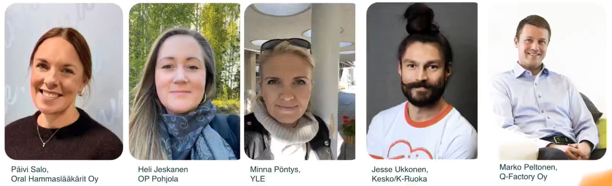

Saavuta 2026
Poimintoja ja nostoja
Valvonta, verkkokaupat, hel.fi, eBay ja paneeli
Saavuta 2026
Seminaarin ohjelma
11.11.2026 klo 9–16 · Iiris, Marjaniementie 74, Helsinki · verkossa ja livenä
Aamupäivä 9–11
- Seminaarin avausAri-Pekka Saarela (Q-Factory) & Miia Kirsi (Celia)
- Kun kaikki on tarjolla, mutta silti harva ymmärtääKirjailija Juha Hurme
- Vuosi velvoitetta takana – Mikä tilanne verkkokauppojen saavutettavuudessaSami Jukkara (Q-Factory)
- Proaktiivisesti vai määräyksen voimalla? Saavutettavuusvalvonnan ajankohtaisia kuulumisiaSanna Sinisalo & Eetu Komsi (Traficom)
Etäyleisö 12–13.45
- Lentävät reportterit SaavutettavuustoriltaTerhi Manninen & Petra Vaisalo
- Häiriökysyntää eivät aiheuta häiriköt vaan liian vaikea kieliLeealaura Leskelä (Selkokeskus)
- Saavutettavuus osaksi sote-ammattilaisten arkeaSari Isotalo & Kaisa Luostarinen (Varsinais-Suomen hyvinvointialue)
Liveyleisö 11–14
- Lounas ja SaavutettavuustoriVerkostoitumista toimijoiden pisteillä sekä työpajoja
Iltapäivä 14–16
- Scaling accessibility at a global e-commerce company – how eBay injects accessibility into their culture and processesMark Lapole, Director, Accessibility (eBay)
- Käyttäjäkokemuksen laadunvarmistus – case Helsingin PalveluYdinTimo Övermark (Q-Factory), Kati Seppälä & Henna Niemi (Helsingin kaupunki)
- Paneeli: Kenen vastuulla saavutettavuus on?Oral, OP Pohjola, Yle, Kesko/K-Ruoka, Q-Factory
- Tapahtuma päättyy
Käsitellään tässä esityksessä
Sisältö
Mitä käydään läpi
- Traficom: saavutettavuusvalvonnan ajankohtaiskatsaus
- Verkkokauppojen saavutettavuus
- hel.fi: saavutettavuus osana kehitysprosessia
- eBay: saavutettavuustiimin kokemuksia
- Paneeli: Oral, OP, YLE, Kesko
01
Traficom: saavutettavuusvalvonnan ajankohtaiskatsaus
Proaktiivisesti vai määräyksen voimalla? Saavutettavuusvalvonnan ajankohtaisia kuulumisia
- Sanna SinisaloTraficom
- Eetu KomsiTraficom
Traficom
Proaktiivisesti vai määräyksen voimalla?
- ValvontaohjelmaVuosittain, kohteet valitaan harkiten ja arpomalla. Automaattinen ja asiantuntijatarkastus.
- KantelutKantelujen käsittely johtaa hallinnolliseen ohjaukseen.
- MääräyksetTarvittaessa korjaamaan velvoitetaan uhkasakon voimalla.
Traficom
Velvoitteet ja suositukset
Velvoitteet
- Tekniset vaatimukset
- Palautekanava ja prosessit palautteen käsittelyyn
Suositukset
- Huomioi alusta asti – jo hankinnassa
- Sekä kehitys- että sisältötyö
- Prosessit palautteen vastaanottoon
- Saavutettavuus jatkuvana työnä
Traficom
Valvonta lukuina
Lisäksi korjaustarkastuksia.
Traficom
Ketä valvotaan?
Valtakunnalliset palvelut sekä alueittain väestötiheyden mukaan:
- Kunnat, virastot, hyvinvointialueet
- Työttömyys- ja eläkekassat
- Oppilaitokset ja kirkot
- Yhdistykset, säätiöt ja osakeyhtiöt
- Julkisoikeudelliset oikeushenkilöt
Traficom
Pelkästään WCAG-kriteereitä vasten tehty auditointi ei useimmiten riitä. EN 301 549 tuo lisävaatimuksia – esim. 9.7 User preferences for web pages. Esimerkki: Turun kaupungin saavutettavuusseloste viittaa jo EN 301 549 -standardiin.
Traficom
Havaintoja direktiivin toimeenpanosta
- Painopisteenä valvonta ja ennakoiva ohjaus: ”Kuulutte lain piiriin – satunnaisotanta osuu kohdalle ennemmin tai myöhemmin.”
- Verkkokauppoja koskevat kantelut ovat nousussa.
- Vaatimuksia päivitetty: saavutettavuusvaatimukset.fi
- WCAG 2.2 voimaan 2027.
Traficom
Kysymykset yleisöltä
- Q: HiQ:lta kysymys. Onko tuleva Traficomin saavutettavuustyökalu täysin FOSS?
- A: (ei täysin mutta pyritään siihen että perusosat olisivat.)
- Q: Näkyykö AI?
- A: ei suoranaisesti mutta erittäin merkittävästi noussut esille "saavutettavuuslisäosat" joita palveluiden tuotteisiin asennetaan, useimmat eivät ole saavutettavia edes oikein asennettuna. Usein nojaudutaan tuotteisiin mutta ei hankita osaamista niitten ymmärtämiseksi.
02
Verkkokauppojen saavutettavuus
Vuosi velvoitetta takana – Mikä tilanne verkkokauppojen saavutettavuudessa
- Sami JukkaraQ-Factory Oy
Verkkokaupat
Tutkimusasetelma
Pintapuolinen saavutettavuus- ja ruudunlukijatestaus (Orca, NVDA).
Verkkokaupat
Tulokset
Suurin ongelma: dialogit ja mainokset keskeyttävät ja estävät käytön.
Verkkokaupat
Saavutettavuusselosteet
Tarkastettiin
Löytyykö seloste, sisältääkö se oikeat asiat ja pitävätkö tiedot paikkansa?
- 70 %:lta seloste löytyi
- 14 sisälsi kaikki lain vaatimat tiedot
- 11 päivätty yli vuosi sitten
- Yksi päiväämätön, yksi päivätty tulevaisuuteen
- Tuore päiväys, vanha sisältö
Verkkokaupat
Verkkokaupassa minimivaatimukset eivät riitä. Ostopolun ja navigaation pitää toimia, eivätkä ylimääräiset elementit saa olla esteenä. Automaatiolla päästään alkuun – ihmistestaajaa tarvitaan valvomaan ja laajentamaan.
03
hel.fi: saavutettavuus osana kehitysprosessia
Käyttäjäkokemuksen laadunvarmistus – case Helsingin PalveluYdin
- Timo ÖvermarkQ-Factory Oy
- Kati SeppäläHelsingin kaupunki
- Henna NiemiHelsingin kaupunki
hel.fi
Tuttu prosessi
- SuunnitteluKäytettävyys ja UX
- HTML-protoOsin tekoälyavusteisesti? Käyttäjätestaus.
- IterointiTekninen iterointi protoa jatkaen
- EnnakkoauditointiErittäin suuri tyytyväisyys
Helsingin design-järjestelmä HDS on iso tekijä – pitkäjänteistä työtä.
hel.fi
Esimerkit ja testaajat
Esimerkkiongelma
Vain luku -kenttä vs. käytöstä poistettu kenttä – visuaalinen suunnittelu ja käyttötavat.
Käyttäjätestaajat
- Vakituiset pääkäyttäjät
- Sisäiset työntekijät
- Saavutettavuustestaus: ulkopuoliset
04
eBay: saavutettavuustiimin kokemuksia
Scaling accessibility at a global e-commerce company – how eBay injects accessibility into their culture and processes
- Mark LapoleDirector, Accessibility, eBay
eBay
Komponentit edellä, ihminen testaa
- eBay UI Core tuottanut hyviä tuloksia: saavutettavat komponentit, joita kehittäjät käyttävät – tai ainakin kopioivat mallit.
- 4 hengen saavutettavuustiimi.
- Ei enää erillistä QA:ta – tekee työstä vaikeampaa.
- Ei luoteta automaatioon – aina manuaalista testausta päälle.
eBay
”Julkaise nopeasti, korjaa nopeasti” ei jostain syystä ulotu saavutettavuuteen. Haaste: pitää saavutettavuus kehityssyklissä ja estää regressiot.
05
Paneeli
Kenen vastuulla saavutettavuus on?
- Päivi SaloOral Hammaslääkärit Oy
- Heli JeskanenOP Pohjola
- Minna PöntysYle
- Jesse UkkonenKesko / K-Ruoka
- Marko PeltonenQ-Factory Oy
Paneeli
Panelistit

Paneeli · OP
Raha motivoi
- Lakisääteisyys on ollut parasta, mitä saavutettavuudelle on tapahtunut.
- Silti työ tehdään alusta asti – sisällöllisenä, ei vain teknisenä asiana.
- Johtoryhmän valistamisella suuri merkitys.
- Puhutaan asiakaskokemuksesta ja asiakkaiden menettämisestä.
- Mittaaminen on vaikeaa.
Paneeli · Kesko
Asiakas ei sano ”saavutettavuus”
- Kysymykset koskevat tiedon löytymistä: ”Mistä löytyy X?” – tiedon saavutettavuutta.
- Tekeminen: pieniä tehtäviä, pieni yksikkökustannus.
- Liiketoiminta: kysymykset koskevat palvelua.
Paneeli · Kesko
Saavutettavuus tekee näkyväksi huonon suunnittelun ja toteutuksen – ja sitä kautta huonon asiakaskokemuksen.
Paneeli · YLE
Kieli on saavutettavuutta
Palvelukielet sekä kieliasu ja sen laatu ovat merkittäviä.
Saavuta 2026
Kiitos!
Sakari Laaksonen